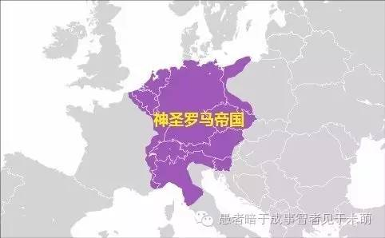

欧洲经济重心的西移——从中世纪晚期到近代早期
Humoon / 2016-07-14
中世纪晚期
古代希腊罗马世界是以地中海为中心的。其实地中海气候区由于雨热不同期，在农业和人口上的潜力并不太大。只是因为在人类只拥有青铜工具时，相比南欧松软的土壤，西欧、中欧和北欧黏重的土地实在难以开发。当铁制农具、新式的犁和挽具等一系列农业技术取得突破后，北方很快就显示出其在土壤肥力和耕地面积上的优势。欧洲的经济重心也随之由地中海沿岸转向比利牛斯-阿尔卑斯山以北。

上图是1337年的天主教世界，将地图顺时针旋转后，在几何上显得相当规整：
水平方向延展的欧洲大陆，和亚平宁半岛、英伦三岛这一南一北的两条突出，总体来看仿佛一个"中"字；北意大利-瑞士-勃艮第-香槟-佛兰德斯，这条几乎竖直延伸的陆上交通、商业大动脉是"中"字中间的这条竖线。
顺理成章地，欧陆上正对英伦三岛的低地地区（莱茵河下游1，今荷兰、比利时、卢森堡）和亚平宁半岛顶端的北意大利地区（波河流域），凭借优良的地理区位垄断了产业链的高端（制造业、商业和金融业），成为中世纪晚期欧洲的两大经济中心2。而在1337年英法百年战争爆发后，法国很多地区受到严重破坏，于是欧陆大动脉向东边的德语地区3略微移动，从北意大利经南德、莱茵河流域到达佛兰德斯东部和荷兰西部。
这一时期的航海技术有限，从意大利到西北欧的大洋航线是不通的，只有在风浪较小的内海，才能形成稳定的商路。北端，德意志沿海城市组建的汉萨同盟一度垄断了北海和波罗的海的贸易；南端，垄断地中海贸易的仍是北意大利人。
中世纪晚期的欧洲，两大内海贸易圈 \(+\) 一条陆上大动脉，便是欧洲贸易的主要架构；很大程度上覆盖于其上的神圣罗马帝国和罗马教廷（教宗国）便是中世纪中晚期欧洲的两大权力中心。

近代早期
地理大发现最大的意义，其实是在欧洲内部的区域争霸方面，即欧洲经济和权力中心从中欧向西欧的转移，而这经历了三个阶段。
第一阶段是14、15世纪航海技术的进步，使直接联结意大利和低地的大西洋航线开通。有了成本低廉的海上交通，中欧陆上大动脉的地位便步入了下降通道。意大利商人开始将势力范围向西北欧扩展，如在英国，渐渐取代了汉萨同盟，垄断了英国的对外贸易和金融业。在15世纪，北意大利的辉煌达到了顶峰，同东正教世界和穆斯林世界长久以来建立的贸易关系，使意大利人成为了几乎全部天主教世界的转口贸易商。神圣罗马帝国则因陆上商道利润的下降，走上了漫长的衰退之路。
第二阶段是15世纪末、16世纪，新航路的开辟和地理大发现。葡萄牙绕过非洲，直接与东方建立了商路；对于做转口贸易的意大利人而言，这不啻于要了他们的命。西班牙发现美洲，则大大扩展了西欧的经济腹地，在更久远的意义上改变了西欧同中欧的力量对比。只不过，意大利人几百年积累的优势，如雄厚资本和先进组织技术，不会一下子就丧失殆尽；而美洲的开发和积累，也需要漫长的时间，不会马上就表现出来。
第三阶段则通过16、17世纪的一系列战争，正式完成欧洲经济重心西移这个历史趋势。首先是法国与西班牙争霸，在北意大利交战半个世纪，使意大利经济一落千丈，丧失了产业链高端的位置。其次是德意志地区的宗教冲突和三十年战争，使德意志损失了三分之一的人口和不计其数的财富，在经济上沦为落后地区。再次，贫瘠的伊比利亚在150年的国际争霸和内战中流干了血，从此自居二流。这样，到1650年前后，欧洲经济重心的西移最终完成，人才、资金和技术向以英、法、低地为代表的西北欧集中，它们占据了产业链的高端，经济结构也同东欧分化得越来越严重。